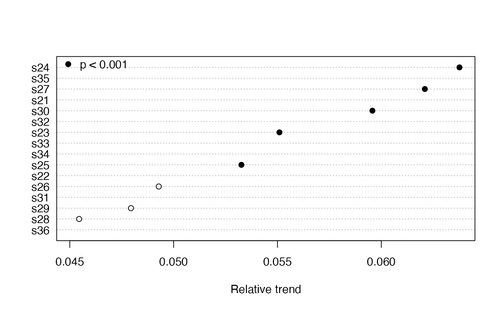

Applies Kendall's tau test for the significance of a monotonic time series trend (Mann 1945). Also calculates the Sen slope as an estimate of this trend.
mannKen( x, plot = FALSE, type = c("slope", "relative"), order = FALSE, pval = 0.05, pchs = c(19, 21), ... )
| x | A numeric vector, matrix or data frame |
|---|---|
| plot | Should the trends be plotted when x is a matrix or data frame? |
| type | Type of trend to be plotted, actual or relative |
| order | Should the plotted trends be ordered by size? |
| pval | p-value for significance |
| pchs | Plot symbols for significant and not significant trend estimates, respectively |
| ... | Other arguments to pass to plotting function |
A list of the following if x is a vector:
Sen slope
Relative Sen slope
Significance of slope
Kendall's S
Variance of S
Fraction of missing slopes connecting
first and last fifths of x
The Sen slope (alternately, Theil or Theil-Sen slope)---the median slope joining all pairs of observations---is expressed by quantity per unit time. The fraction of missing slopes involving the first and last fifths of the data are provided so that the appropriateness of the slope estimate can be assessed and results flagged. Schertz et al. [1991] discuss this and related decisions about missing data. Other results are used for further analysis by other functions. Serial correlation is ignored, so the interval between points should be long enough to avoid strong serial correlation.
For the relative slope, the slope joining each pair of observations is
divided by the first of the pair before the overall median is taken. The
relative slope makes sense only as long as the measurement scale is
non-negative (not, e.g., temperature on the Celsius scale). Comparing
relative slopes is useful when the variables in x have different
units.
If plot = TRUE, then either the Sen slope (type = "slope") or
the relative Sen slope (type = "relative") are plotted. The plot
symbols indicate, respectively, that the trend is significant or not
significant. The plot can be customized by passing any arguments used by
dotchart such as xlab or xlim, as well as
graphical parameters described in par.
Approximate p-values with corrections for ties and continuity are used if \(n > 10\) or if there are any ties. Otherwise, exact p-values based on Table B8 of Helsel and Hirsch (2002) are used. In the latter case, \(p = 0.0001\) should be interpreted as \(p < 0.0002\).
Mann, H.B. (1945) Nonparametric tests against trend. Econometrica 13, 245--259.
Helsel, D.R. and Hirsch, R.M. (2002) Statistical methods in water resources. Techniques of Water Resources Investigations, Book 4, chapter A3. U.S. Geological Survey. 522 pages. http://pubs.usgs.gov/twri/twri4a3/
Schertz, T.L., Alexander, R.B., and Ohe, D.J. (1991) The computer program EStimate TREND (ESTREND), a system for the detection of trends in water-quality data. Water-Resources Investigations Report 91-4040, U.S. Geological Survey.
#> [1] 1871 1970 1mannKen(Nile)#> $sen.slope #> [1] -2.6 #> #> $sen.slope.rel #> [1] -0.002569361 #> #> $p.value #> [1] 3.658263e-05 #> #> $S #> [1] -1387 #> #> $varS #> [1] 112728.3 #> #> $miss #> [1] 0 #>y <- sfbayChla y1 <- interpTs(y, gap=1) # interpolate single-month gaps only y2 <- aggregate(y1, 1, mean, na.rm=FALSE) mannKen(y2)#> sen.slope sen.slope.rel p.value S varS miss #> s21 0.1665432 0.06147581 6.816432e-06 150 1096.66667 0.633 #> s22 0.1394676 0.05239249 1.188856e-04 111 817.00000 0.633 #> s23 0.1389468 0.05509474 2.766259e-04 97 697.00000 0.388 #> s24 0.1689745 0.06376337 1.690823e-06 194 1625.33333 0.388 #> s25 0.1541667 0.05326458 3.809526e-04 127 1257.66667 0.388 #> s26 0.1571131 0.04928646 1.896550e-03 83 697.00000 0.388 #> s27 0.1952381 0.06209479 1.482216e-05 165 1433.66667 0.388 #> s28 0.1873244 0.04545046 1.892819e-03 70 493.33333 0.388 #> s29 0.1856407 0.04794690 1.318217e-03 100 950.00000 0.388 #> s30 0.2247344 0.05957133 7.890224e-05 141 1257.66667 0.388 #> s31 0.2562371 0.04873881 7.487887e-03 40 212.66667 0.633 #> s32 0.2848817 0.05832930 5.320055e-04 71 408.33333 0.633 #> s33 0.2901286 0.05387159 2.480000e-02 22 92.00000 0.755 #> s34 0.3067308 0.05332272 1.845721e-03 41 165.00000 0.755 #> s35 0.4474985 0.06291285 8.400000e-02 8 16.66667 1.000 #> s36 0.2598214 0.04511616 4.600000e-03 31 125.00000 0.837mannKen(y2, plot=TRUE) # missing data means missing trend estimatesmannKen(y2, plot=TRUE, type='relative', order = TRUE, pval = .001, xlab = "Relative trend")